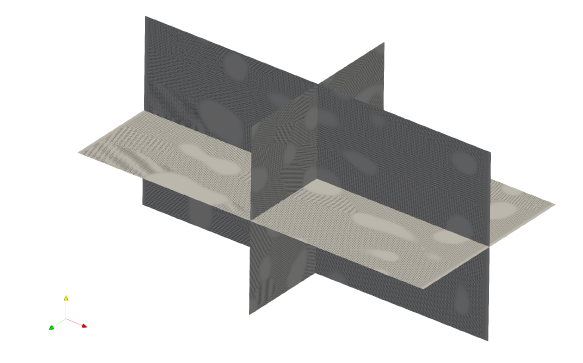

|
OpenPFC
0.1.0
Phase Field Crystal simulation framework
|
|
OpenPFC
0.1.0
Phase Field Crystal simulation framework
|

Phase field crystal (PFC) is a semi-atomistic technique, containing atomic resolution information of crystalline structures while operating on diffusive time scales. PFC has an ability to simulate solidification and elastic-plastic material response, coupled to a wide range of phenomena, including formation and co-evolution of microstructural defects such as dislocations and stacking faults, voids, defect formation in epitaxial growth, displacive phase transitions, and electromigration.
OpenPFC is an open-source framework for high performance 3D phase field crystal simulations. It is designed to scale up from a single laptop to exascale class supercomputers. OpenPFC has succesfully used to simulate domain of size 8192 x 8192 x 4096 on CSC Mahti. 200 computing nodes were used, where each node contains 128 cores, thus total 25600 cores were used. During the simulation, 25 TB of memory was utilized. The central part of the solver is Fast Fourier Transform with time complexity of O(N log N), and there are no known limiting bottlenecks, why larger models could not be calculated as well.
Requirements:
g++ --version. The default compiler might be relatively old, and more recent version needs to be loaded with module load gcc. Do not try to compile with GCC 4.8.5. It will not work. At least GCC versions 9.4.0 (coming with Ubuntu 20.04) and 11.2 are working.module load openmpi/2.1.3, for instance. Additionally, if cmake is not able to find proper OpenMPI installation, assistance might be needed by setting MPI_ROOT, e.g. export MPI_ROOT=/share/apps/OpenMPI/2.1.3.FFTW_ROOT. Depending how FFTW is installed to system, it might be in non-standard location and module load fftw is needed. You can use commands like whereis fftw or ldconfig -p | grep fftw to locate your FFTW installation, if needed.Typically in clusters, these are already installed and can be loaded with an on-liner
For local Linux machines (or WSL2), packages usually can be installed from repositories, e.g. in case of Ubuntu, the following should work:
Some OpenPFC applications uses json files to provide initial data for simulations. In principle, applications can also be built to receive initial data in other ways, but as a widely known file format, we recommend to use json. The choice for json package is JSON for Modern C++. There exists packages for certain Linux distributions (nlohmann-json3-dev for Ubuntu, json-devel for Centos) for easy install. If the system-wide installation is not found, the library is downloaded from GitHub during the configuration.
The last and most important dependency in order to use OpenPFC is HeFFTe, which is our choice for parallel FFT implementation. The instructions to install HeFFTe can be found from here. HeFFTe can be downloaded from https://bitbucket.org/icl/heffte/downloads/.
If HeFFTe is installed to some non-standard location, cmake is unable to find it when configuring OpenPFC. To overcome this problem, the install path of HeFFTe can be set into environment variable CMAKE_PREFIX_PATH. For example, if HeFFe is installed to $HOME/opt/heffte/2.3, the following is making cmake to find HeFFTe succesfully:
During the configuration, OpenPFC prefers local installations, thus if HeFFTe is already installed and founded, it will be used. For convenience, there is a fallback method to fetch HeFFTe sources from internet and build it concurrently with OpenPFC. In general, however, it is better to build and install programs one at a time. So, make sure you have HeFFTe installed and working on your system before continuing.
OpenPFC uses cmake to automate software building. First the source code must be downloaded to some appropriate place. Head to the releases page and pick the newest release and unzip is somewhere. Alternatively, if you are planning to develop the project itself of are just interested about the bleeding edge features, you might be interested to clone the repository to your local machine. GitHub account is needed to clone the project.
Next step is to configure project. One might consider at least setting option CMAKE_BUILD_TYPE to Debug or Release. For large scale simulations, make sure to use Release as it turns on compiler optimizations.
Keep on mind, that configuration will download HeFFTe if the local installation is not found. To use local installation instead, add HeFFTe path to environment variable CMAKE_PREFIX_PATH or add Heffte_DIR option to point where HeFFTe configuration files are installed. Typical configuration command in cluster environment is something like
Then, building can be done with command cmake --build build. After build finishes, one should find example codes from ./build/examples and apps from ./build/apps. Installation to path defined by CMAKE_INSTALL_PREFIX can be done with cmake --install build.
OpenPFC is a software framework. It doesn't give you ready-made solutions, but a platform on which you can start building your own scalable PFC code. We will familiarize ourselves with the construction of the model with the help of a simple diffusion model in a later stage of the documentation. However, let's give a tip already at this stage, how to start the development work effectively. Our "hello world" code is as follows:
To compile, CMakeLists.txt is needed. Minimal CMakeLists.txt is:
With the help of CMakeLists.txt, build and compilation of application is straightforward:
During the configuration step (cmake -S. -B build), you might end up to the following error message:
The error message is trying to say command in CMakeLists.txt (line 3) fails:
The reason why this happens is that cmake is not able to find the package. By default, cmake finds packages by looking a file which is called Find<package_name>.cmake from couple of standard locations. For example, in Ubuntu, one of these locations is /usr/lib/cmake, where the files are installed when doing a global install of some package with root rights. When working with supercomputers, users in general doesn't have rights to make global installations, thus packages are almost always installed to some non-default locations. Thus, one needs to give some hints to cmake where the file could be found. This can be done (at least) two different ways.
The first way is to set up an environment variable indicating any extra locations for the files. One option is to use CMAKE_PREFIX_PATH environment variable, like before. For example, if OpenPFC is installed to /opt/OpenPFC, one can give that information before starting configuration:
Another option is to hard code the choise inside the CMakeLists.txt file directly. Just keep in mind, that this option is not very portable as users tends to install software to several different locations and there is no any general rule how it should be done. So, instead of defining CMAKE_PREFIX_PATH before doing configuration, the following change in CMakeLists.txt is equivalent:
This way, cmake know to search necessary files from the path given above.
A bigger application example is Tungsten model. Todo.